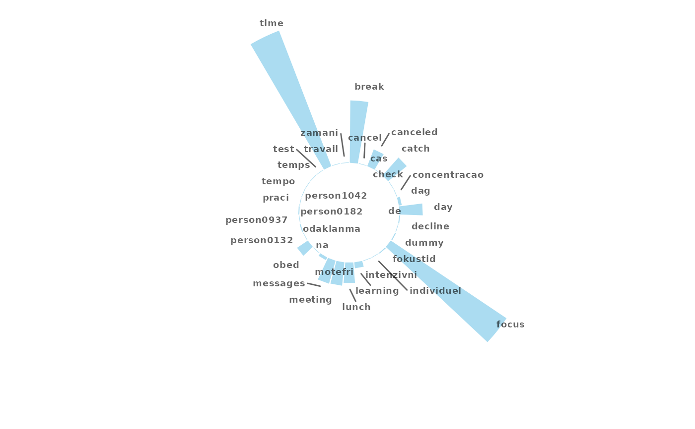
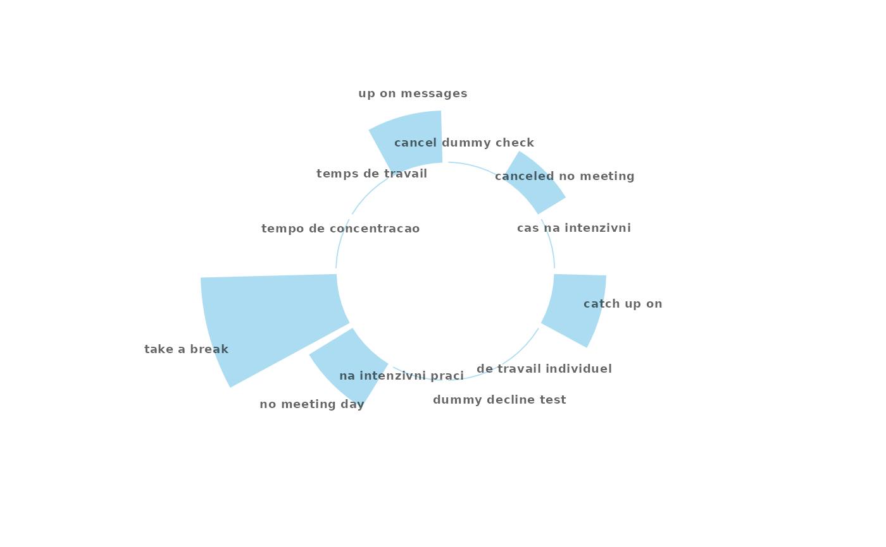

Perform a Word or Ngram Frequency Analysis and return a Circular Bar Plot
Source:R/tm_freq.R
tm_freq.RdGenerate a circular bar plot with frequency of words / ngrams.
This function is used within meeting_tm_report().
Arguments
- data
A Meeting Query dataset in the form of a data frame.
- token
A character vector accepting either
"words"or"ngram", determining type of tokenisation to return.- stopwords
A character vector OR a single-column data frame labelled
'word'containing custom stopwords to remove.- keep
A numeric vector specifying maximum number of words to keep.
- return
String specifying what to return. This must be one of the following strings:
"plot""table"
See
Valuefor more information.
Value
A different output is returned depending on the value passed to the return
argument:
"plot": 'ggplot' object. A circular bar plot."table": data frame. A summary table.
Details
This function uses tm_clean() as the underlying data wrangling function.
There is an option to remove stopwords by passing a data frame into the
stopwords argument.
See also
Other Text-mining:
meeting_tm_report(),
pairwise_count(),
tm_clean(),
tm_cooc(),
tm_wordcloud()
Examples
# circular network plot with words
tm_freq(mt_data, token = "words")
#> Selecting by n

# circular network plot with ngrams
tm_freq(mt_data, token = "ngrams")
#> Selecting by n

# summary table of text frequency
tm_freq(mt_data, token = "words", return = "table")
#> Selecting by n
#> # A tibble: 35 × 2
#> word n
#> <chr> <int>
#> 1 time 291
#> 2 focus 279
#> 3 break 125
#> 4 catch 48
#> 5 messages 48
#> 6 day 47
#> 7 meeting 47
#> 8 lunch 41
#> 9 canceled 36
#> 10 obed 26
#> # ℹ 25 more rows